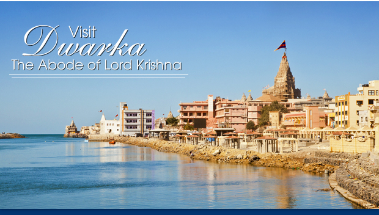

Depending on who you are, what you are about to read can seem anything from myth to legend to reality. Turn back the cosmic clock, let your imagination plummet suddenly into 1500 BC, and you may begin to recreate in your mind’s eye, a city of gold – Dwarka, the mesmerizing kingdom of Lord Krishna. Ranchhodrai, as Lord Krishna is affectionately called in Gujarat, came to Dwarka from Mathura to build his new kingdom where he would later spend a significant part of his life. Located at the western tip of the Saurashtra peninsula, this town enjoys remarkable importance in Hindu lore. It is the only place considered both one of the four principal holy places (char dham), as well as one of the seven ancient towns (sapta puris) to visit. For this reason, millions of pilgrims and historical scholars have come here over the centuries.

It is believed that immediately after the death of Lord Krishna and the consequent demise of the Yadav dynasty a massive flood swallowed all of Dwarka and submerged the city of gold to the bottom of the ocean. However, current excavations give us reason to think this myth has a historical basis, as most myths do.
Today, the present Dwarka sits at the opening of the Gomti river on the Arabian Sea and is renowned for the Dwarkadheesh temple, among other notable historical and religious sites. It is believed that Mirabhai, Lord Krishna’s devoted follower, merged with his idol in this temple. Every year during Janmashtami (the anniversary of Krishna's birth), thousands of devotees from all over the world come here to partake in elaborate festivities.
Things to do
We recommend the five-hour guided tour bookable at either the Nagar Panchayat's office, located near the vegetable market, the Tourist Bureau, located near the main bus stand, or the Toran Guest House.
This five-hour local tour takes you to Nageshwar Jyotiling Temple, Gopi Tarav and Beyt Dwarka. The tariff does not include the ferry charges to Beyt Dwarka. The first tour starts at 8am and the second tour begins around 2pm.
Krishna's Dwarka
Worshiped as the 8th incarnation of the Hindu deity Vishnu, Krishna is believed to have been born sometime between 1500 and 700 BC in Mathura, just south of Delhi in the modern state of Uttar Pradesh. There Krishna killed the oppressive king Kansa, angering his father-in-law Jarasandh. Jarasandh attacked Krishna's kingdom 17 times in a lengthy war as he tried to avenge the death of his son-in-law. The people of Mathura, the Yadavs, suffered heavy casualties. Krishna knew that his people would not be able to survive another war with Jarasandh, as the ongoing conflict was not only taking lives but also impacting trade and farming. So as to avert any further casualty, Krishna left the battle grounds and began to be known as Ranchhodji (one who leaves the battle grounds).
Krishna, along with the Yadav dynasty, crossed Gomantak (Girnar Mountain), and arrived at the coast of Saurashtra at a distance of 32 km from Somnath. According to some references, he arrived near the present day Okha and established his kingdom on Beyt Dwarka. It is believed that Samudradev, the lord of the sea, blessed Krishna with a land measuring twelve yojanas (773 square km) and Vishwakarma, the celestial architect in Hinduism, granted Krishna's wishes and built him his new kingdom. This new capital flourished with such wealth and oppulence that it was called the City of Gold, and Krishna came to be known as Dwarkadheesh (King of Dwarka). Krishna's life goal was to re-establish a kingdom based on the principal of Sat Dharma or 'true religion'. Dwarka, also known as Dwaravati, comes from the words dwara, meaning 'door,' and ka, meaning 'Brahma.' Thus the name refers to the place as a door to union with Brahma, the indescribable ground of all reality, in other words a gateway to spiritual liberation.
Dwarka was reportedly a thoroughly planned city, which had six well-organized sectors, residential and commercial zones, wide roads, plazas, palaces and many public utilities. Public meetings were held in a hall called sudharma sabha (meeting of true religion). In ancient times its flourishing port was considered to be the gateway to the mainland. The city had 700,000 palaces made of gold, silver and other precious stones, as well as beautiful gardens and lakes. The entire city was surrounded by water and connected with the mainland through well-constructed bridges.
Death of Dwarkadhish
After returning from the historic Kurukshetra war between the Pandavas and Kauravas, Krishna found that the Yadav dynasty had declined to a state of deplorable behavior, quarrels and negligency. Slowly the dynasty receded into infighting, and their own self-inflicted demise. Unable to end the bloodshed, Krishna departed to the forest, where he was accidentally shot by an arrow at Bhalka Tirtha and finally left his body in Dehotsargh, where he was cremated by Arjun.
Dwarka Submerged
The death of Krishna symbolized the beginning of the Kali-yuga, an age of strife, discord and quarrel. After Krishna's departure a massive flood swallowed up the city of gold, and it is believed that the city was submerged by the ocean and rebuilt six times by different civilizations. The modern day Dwarka is the 7th such city to be built in the area.
There are various theories suggesting the exact location of the original Dwarka. But there are also some archaeological signs to support the belief that the ancient Dwarka lies buried under the present Dwarka and extended up to Beyt Dwarka in the north, Okhamadhi in the south, and Pindara in the east.
Myth or Reality?
Recent findings indicate that these stories of ancient Dwarka have a historical basis. Thirty copper coins, a foundation of boulders, old structures including a circular one and pottery samples dating back around 1500 BC were excavated.
The recent underwater study on the coastal water of Dwarka conducted by the ASI (Archeological Survey of India) reveals the existence of a city dated to the 2nd millennium BC. The search for the lost city was going on since 1930's. Explorations between 1983 and 1990 have revealed a township that was built in six sectors along the banks of a river. They have also found a well-fortified township of Dwarka, that extended more than half a mile from the shore. The foundation of boulders on which the city's walls were erected proves that the land was reclaimed from the sea. The general layout of the city of Dwarka described in ancient texts corresponds with that of the submerged city discovered by the Marine Archeology Unit (MAU)
In order to find a detailed report on the excavations we recommend you to go to the National Institute of Oceanographywebsite.
How to get there
By road: Dwarka is on the state highway from Jamnagar to Dwarka. Direct buses available from Jamnagar and Ahmedabad.
By rail: Dwarka is a station on the Ahmedabad-Okha broad gauge railway line, with trains connecting it to Jamnagar (137 km), Rajkot (217 km) and Ahmedabad (471 km), and some trains that continue all the way down the coast through Vadodara, Surat, Mumbai, Goa, Karnataka, to the southern tip of India in Kerala.
By air: Nearest airport is Jamnagar (137 km).
By water: N/A